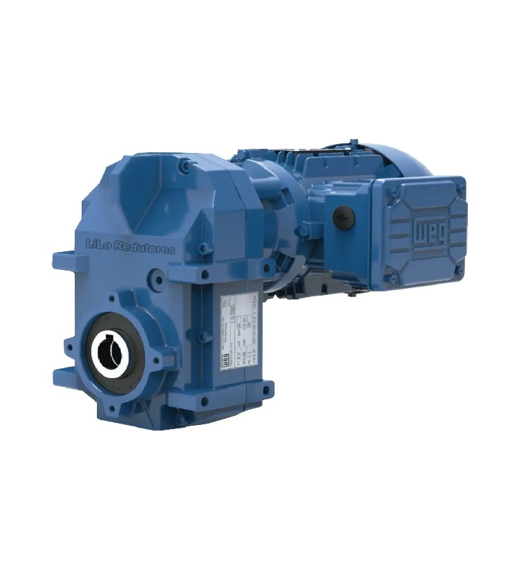

Dados principais
| TAG | SEM-TAG-OS6310 |
|---|---|
| Fabricante | WEG CESTARI |
| Tipo do equipamento | MOTOREDUTOR |
| Modelo | V58341NK00FAW |
| Potência | MOTOR 3CV 3F 4 POLOS |
| Relação de redução | |
| RPM entrada/saída | 1750.0 |
| Lubrificante | ISO VG 220 |
| Quantidade de óleo | |
| Local / Área | |
| Observações | OS 6310 TAG 7597158 TAG MOTOR OS MOTOR OS6309 |
Acessos rápidos
Link desta página
https://goldredutoresinpasa-web.github.io/DATABOOK-CALDEIRA-1/equipamentos/SEM-TAG-OS6310/